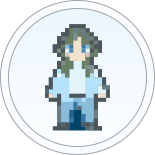
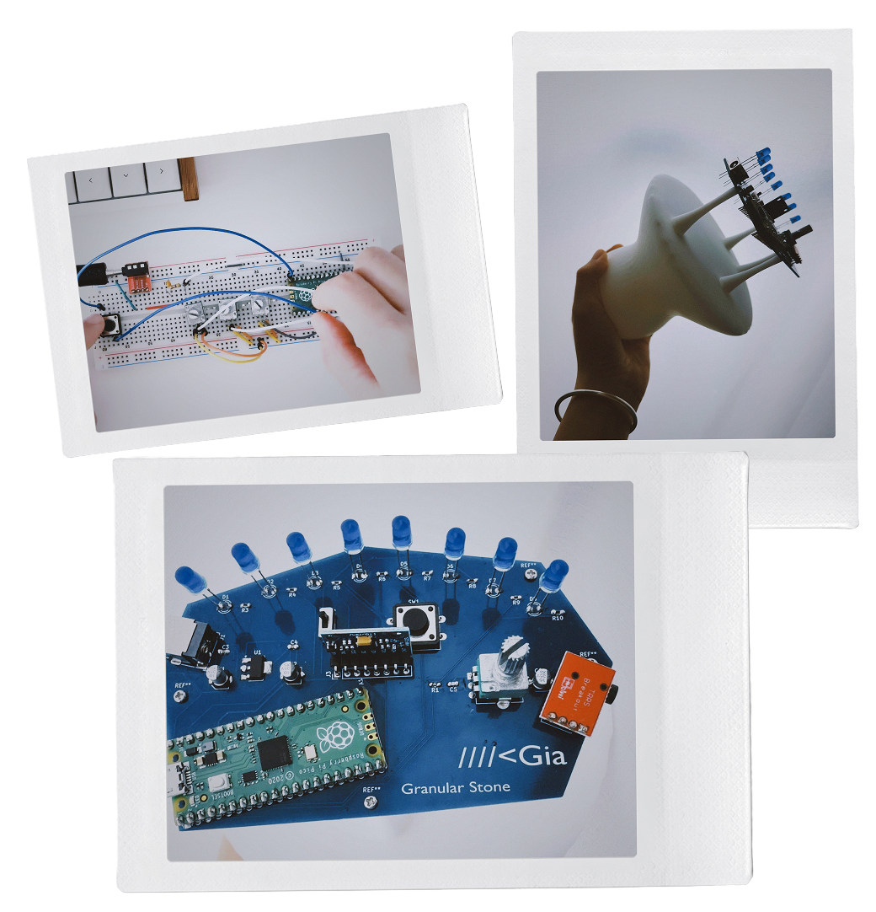
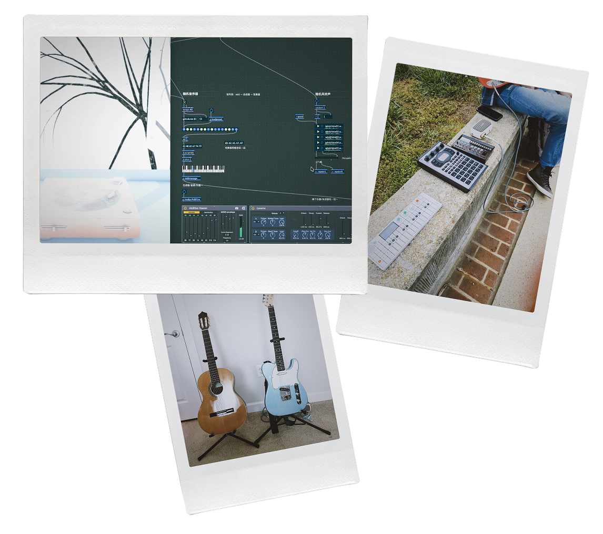

Gia Wang
Product designer working
on complex workflows
and creative tools, with
experience in B2B SaaS
and a long-term focus on
music technology.
Simplifying Rate Search for Freight Forwarders
B2B SaaS / Complex Workflows / Design Systems
Rethinking Delivery Workflows for Drivers
Handheld Interface / Configurable Workflows / Design System / B2B SaaS
Touchless Control for Musicians with Mobility Constraints
Music Tech / Accessibility / AI-assisted Voice Control
Interactive Music Player Using Web Audio API and p5.js
Creative Coding · Interaction Design · HTML/CSS/JavaScript
Audio-Visual Record Player with Max/MSP + Unity
Creative Coding · Sound Design · Audio-Visual Interaction
A Custom UI Skin Concept for Lunacy Audio's CUBE
Visual Design · VST UI · Figma
Exploring Usability Patterns in VST Synth Interfaces
UX Research · VST Interfaces · Ongoing
A little more about me
I studied psychology before finding my way into HCI and design, with a curiosity about how people perceive and interact with the world.
Applied Psychology @ GZHU
I have a soft spot for game design
As a Game Design TA, I got to think about interaction through mechanics, narrative, player behavior, and sound. I even gave a talk on one of my favorite rabbit holes: interactive music.
I'm drawn to interactions I can touch
I like making things I can actually touch and play with. That's taken me from breadboards and sensors to physical prototypes, and eventually built my own synth, Granular Stone.

Making music gives me ideas for design
I usually end up getting curious about the tools, too. I start wondering what else they could do, and how different ways of working with them might lead to different sounds, ideas, or unexpected results.

Let's work together :))))))